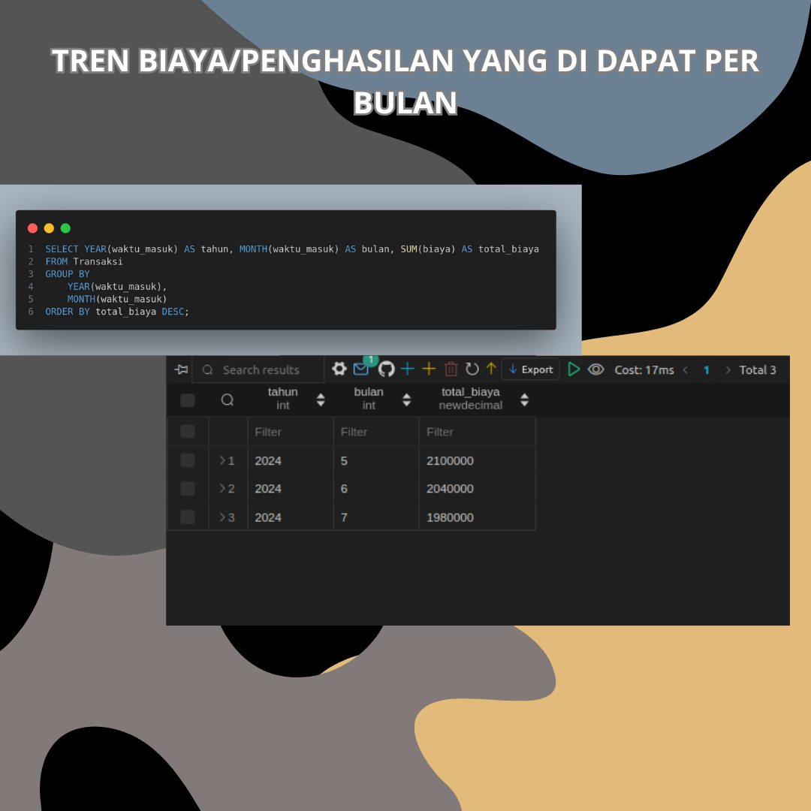
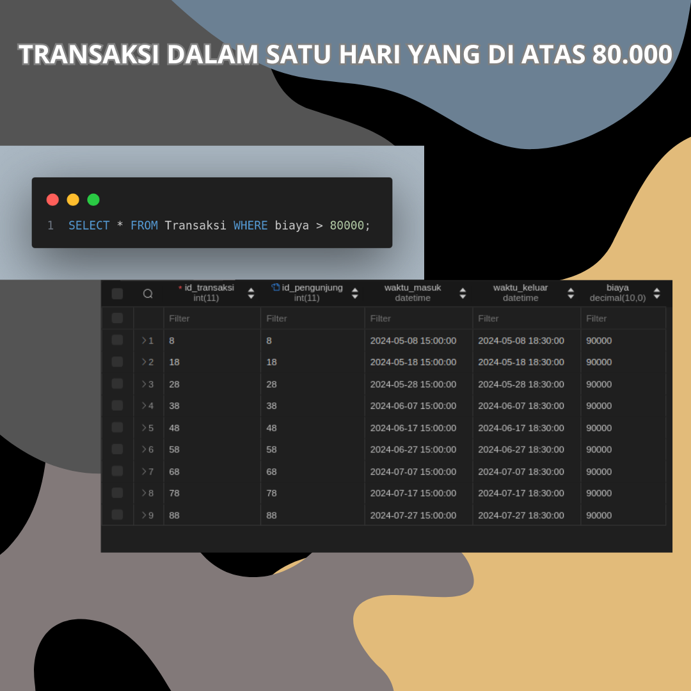
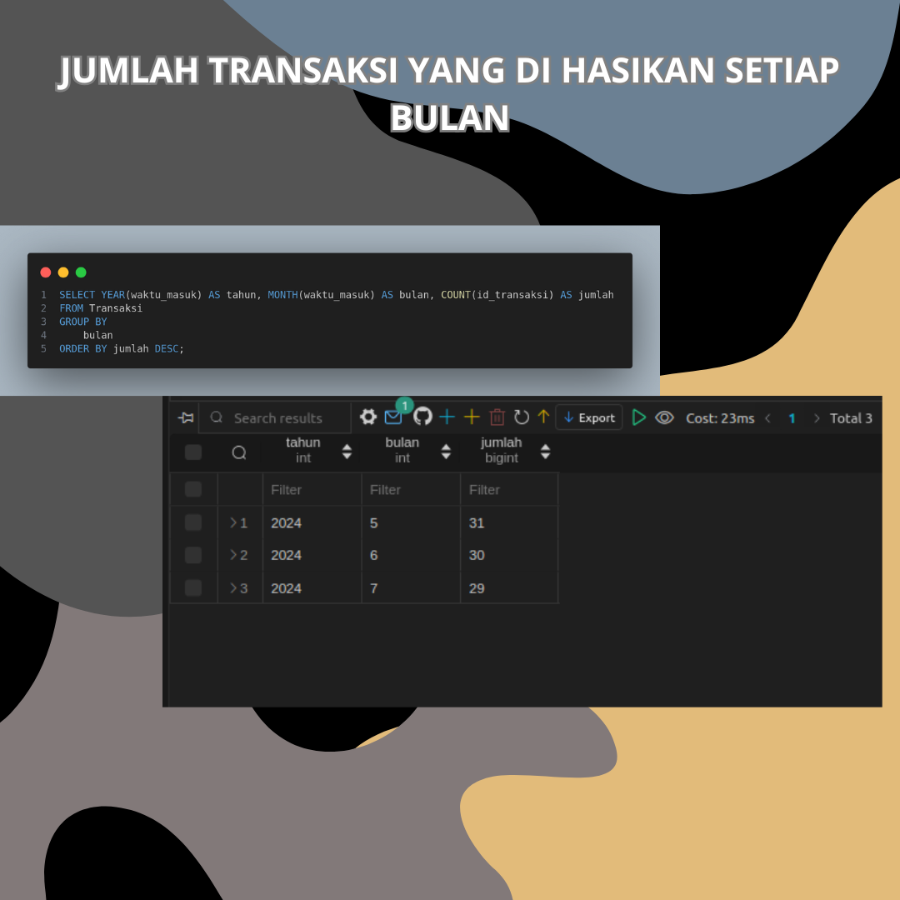
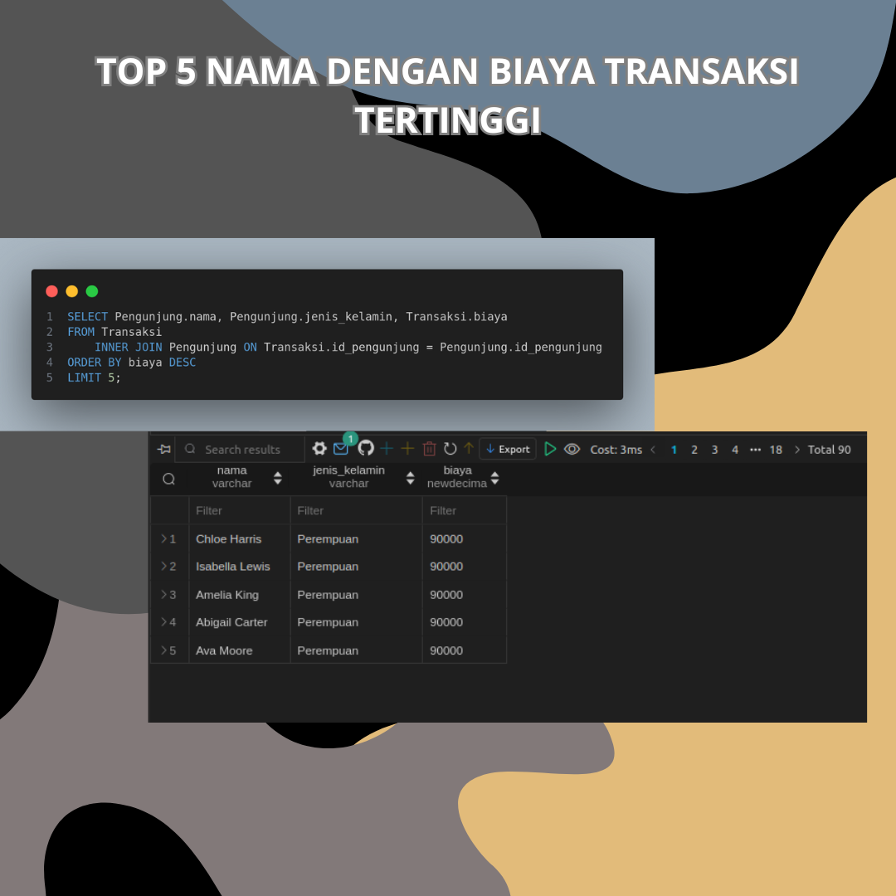

ANALISIS SEDERHANA DATA PARKIR MENGGUNAKAN SQL
Tentang Data : Data ini adalah data yang di buat menggunakan AI yaitu dengan Chat GPT yang di dalamnya terdapat data pengunjung dan data transaksi. Di dalam data pengunjung terdapat data-data seperti data id_pengunjung, nama, jenis kelamin, umur dan alamat, kemudian di dalam data transaksi terdapat variabel data seperti data id_transaksi, id_pengunjung, waktu masuk, waktu keluar dan biaya. Data ini di analisis untuk mengetahui
Tujuan Analisis : Untuk mengetahui penghasilan yang di dapat setiap bulannya. Kemudian jumlah transaksi yang di hasilkan setiap bulannya. Dan juga melihat pengunjung dengan biaya transaksi parkir tertinggi (TOP 5)
Tools Analisis : SQL
RESULT
   Summary : Nahh... dari hasil pencarian informasi/analisis yang saya dapat terkait dataset parkir, kita bisa melihat seksama bahwasannnyn income yang di dapat setiap bulannya dalam beberapa bulan kebelakang, bahwasannya nilai income yang di dapat hingga saat ini itu cenderung mengalami penurunan dalam segi income. Biasanya Ini bisa di sebabkan oleh beberapa hal di antaranya yaitu salah satunya perusaahaan membukan usaha awal mereka(grand opening), yang dimana banyak terdapat discount atupun penawaran spesial terhadap calon konsumen mereka. Begitu juga dengan jumlah niali transaksi di setiap bulan. Kita bisa melihat juga 5 nilai biaya transaksi tertinggi itu berkisar Rp.90.000, dalam hal ini di hari" tertentu saja, mungkin bisa juga dalam hal memberi penawaran menarik terhadap konsumen, sehingga banyak yang tertarik dan meningkatkan nilai income parkir.